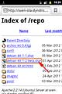
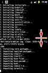
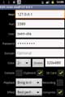
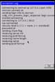

Debian Kit for Android
This kit installs a full version of
Debian or Ubuntu on your Android phone or tablet. Key features are:
- Debian and Android side-by-side - your Android device works as usual
but you can unleash the power of Debian / Ubuntu on demand.
- Easy installation, provided that you have a fast Internet connection
and you are familiar with Linux command lines to some extent.
- You can use a compiler, install a GUI (e.g. LXDE), and run any
software that is offered by Debian / Ubuntu including command line
driven daemons as well as GUI software.
- The kit is accompanied by a small software repository that contains
e.g. a daemon that updates Debian's
/etc/resolv.conf
file from
the Android net.dns
property.
- The kit runs on different hardware, i.e. armel and i386
architectures are supported. You can use a loop disk file (up to 2 Gb)
as well as an extra partition on an external SD card (up to 32 Gb).
- The Debian system does not run in a chroot jail, it's installed
side-by-side to Android instead. With this, all Android files / mounts
are also accessible from Debian.
- Easy un-installation: the pre-installed Android software on your
device is not altered seriously and you can get rid of this stuff if you
are done. No flashing, no system extensions, no hassles.
Tip: Instead RTFM, you may also watch H.264 screen casts.
Either debian-kit.mp4
(3 Mb, shows basic installation of Debian Squeeze with openssh-server) or debian-kit-office.mp4
(12 Mb, Ubuntu Precise with LXDE, Firefox, and LibreOffice). Also, theres a
Debian Kit
app on Google play now that keeps you informed about updates, checks for
showstoppers and displays this page.
Notes: There are similar
projects out there that may better match your needs, hardware, or taste.
Specifically, Gaël's Linux Installer and
Zachary's Linux on
Android projects are visible via Google Play. Also, the kit's sources
are hosted as a SourceForge Project
now.
There are
moderate prerequisites your Android device should met. The prerequisites are
also checked by the installation script. You simply cannot continue if
something is wrong.
- Root access to your Android device is required. No root, no
Debian.
- Kernel supports mounting loop disks or you have at least an external
SD card with a spare partition.
- Kernel supports the ext2, ext3, or ext4 file systems.
- CPU architecture is ARM (little endian) or i386 (ia-32 bit).
- 128 Mb of RAM or more, otherwise the launcher app may be killed
during installation.
- 512 Mb of free space on SD card (either internal or external).
- Internet connection to download 100-500 Mb of software
packages.
- Terminal app installed, alternatively ADB access.
- If you are a noob: command line input and text file editing is a
must.
WARNING: This stuff is checked on different hardware. The
kit should run with stock factory firmware, but customized ROMs should work
also. Nevertheless: root access always includes the chance to do something
very fatal to your device. Always watch, read and dig the error messages (if
any) and re-think twice before doing something nasty.
The following devices are tested (kudos to
Brian for doing some of
these):
| Device |
Software |
Remarks |
| Samsung Galaxy Tab GT-P1000 |
Android 2.3 Gingerbread (original ROM with CyanogenMod
Kernel) |
Working. Complains about double binaries in /sbin which can be
safely ignored. |
| Huawei S7 |
Android 2.1 Froyo (original ROM) |
Working. You should answer yes in the cleanup step,
because you'll need every bit for apps. |
| Samsung i7500 |
Android 1.6 Donut (Galaxo ROM) |
Working, but due to 96Mb RAM no LXDE, requires ADB shell to
install. |
| Archos 7c home Tablet |
Android 1.6 Donut (A70CHT original ROM + GApps) |
Working, but because of the CRAMFS read-only rootfs it's
pivot-rooted to RAM-disk. |
| HTC Desire GSM |
Android 2.3 Gingerbread (CyanogenMod 7 ROM+Kernel) |
Working. |
| HTC Desire Z GSM |
Android 4.0.3 ICS (CyanogenMod 9 ROM+Kernel) |
Working. Requires relaxing firewall rules to contact
127.0.0.1:3389 for RDP (install iptables for this). |
| Samsung Galaxy Nexus |
Android 4.0.3 ICS (Open Kang, AOKP Maguro Build-25) |
Working. Had some troubles with the pre-installed busybox which
is fixed now. |
| ExoPC Slate (aka. WeTab) |
Android-x86.org ICS (4.0.3 Corvusmod ISO) |
Working. As a gimmick: vbox kernel modules for corvusmod kernel
included. |
| Motorola Milestone 2 |
Unsure: it was dark and late. |
Working (Kit-1.4+fix). Only ext4 kernel module loaded by
default, hence ext4 debian.img. |
| Android Emulator (Google) |
Android 4.0.3 ICS on Armel+ext2-Kernel |
Working, but slow (it's an emulator!). |
| Android Emulator (Intel) |
Android 2.3.3 Gingerbread on Atom / x86 |
Working very fast (if VT-with-KVM is present). |
Depending on
your Internet connection speed, you are up and running in 30 minutes.
Tip: tap on the screen shot images below to enlarge / shrink.
- Step 1)
- Download the installation file from my web site to your Android
device. For compatibility to older Android browsers the *.shar file is
stored as *.jpeg on your device.
- http://sven-ola.dyndns.org/repo/debian-kit-1-3.shar
- Tip: if you want to inspect the shell archives contents on
your PC, you can unpack on a Linux command line with the following
commands: mkdir /tmp/debian-kit and bash debian-kit-*
/tmp/debian-kit. Note, that not all shell interpreters are
compatible with this kind of shell archive. Watch for error messages and
use another shell interpreter if required.
 Step 2)
Step 2)- Install and start the ConnectBot app. Click on
the
Protocol drop-down and select the Local
entry. Enter a name, e.g. Local Shell and confirm. This will
open a command line shell that displays a dollar prompt ($
).
- Tip: change ConnectBot's
Rotation setting from
Default to Auto to prevent the default
landscape display.
 Step 3)
Step 3)- Enter su and confirm with [enter]. A confirmation dialog
should pop up, asking you to confirm root access. If this does not work
(e.g.
Permission denied
is displayed) your Android device is not
rooted and you cannot continue. Otherwise the prompt changes to a hash
sign (#
) indicating that the shell now has root access
rights.
 Step 4)
Step 4)- The Android browser typically downloads to
/sdcard/download
.
Enter sh /sdcard/download/debian-kit-* and confirm with
[enter]. The shell archive prompts you with Y/n that it
will unpack itself to the /data/local/deb
directory. Confirm with
[enter] to unpack.
- Note: if the destination directory already contains a
bootdeb
script file from a previous installation, the IMG=
and MNT=
lines in this file are saved and re-applied after
unpacking. With this you don't loose critical settings when upgrading
the kit.
 Step 5)
Step 5)- If no loop disk file from a previous installation is found, a small
autorun wizard starts prompting you for first-time installation options.
Enter two characters according to the menu and confirm with [enter].
Examples: enter 0s for a minimal Debian Squeeze or enter
2p for a maximum size Ubuntu Precise. Enter nothing to leave
the autorun wizard now, e.g. to run the installation manually (see Manual Installation section below).
 Step 6)
Step 6)- The installation starts. If anything is wrong, some error message
shows up now. Otherwise, a loop disk file is created and formatted which
needs some minutes. After this, the first stage of the Debian
installation starts downloading packages. You may need to prevent your
device from sleeping in order to keep the Internet connection
alive.
- Step 7)
- The autorun wizard is still active. This means, that after
successfully completing the first stage of the Debian installation, the
second stage starts automatically by checking the installation media and
completing the setup. In case of errors, you need to re-start manually
(see Manual Installation section
below).
 Step 8)
Step 8)- If the second stage succeeds, the autorun wizard finishes by
starting the
clean
script that in turn asks you for a
confirmation. Enter yes and confirm with [enter] to remove
all files that are only required during installation. This saves
valuable space on your Android's /data
partition, thus leaving
more space to install apps. If you also don't plan to use the static
OpenVpn binary that comes with the kit, you can save even more space by
entering ovpn instead. Enter q to abort cleaning,
e.g. if you plan to re-read the docs, contribute to the kit, or create
another Debian installation later on.
 Step 9)
Step 9)- After finishing the autorun wizard, the Debian disk is unmounted and
you will see the Android shell's hash prompt again. Typically, a small
deb
script was added during installation to the
/system/bin
directory. This is available to activate Debian on
demand now. Enter deb and confirm with [enter]. This will
mount the Debian loop disk file / SD card partition and you find
yourself on a root bash shell ready to start typing in Debian
commands.
- In the bash root shell, type apt-get update and
apt-get upgrade to get the latest security updates. Also
enter apt-get install andromize to install a package that
adds Android specific user groups, changes some defaults for the
adduser
command, and pulls in androresolvd
- a small
daemon that queries the Android net.dns1
property that in turn
updates the /etc/resolv.conf
file if your network connection
changes. It also prevents Debian's hal
package from being
installed later on, because this oopses the Android GUI.
Basically you are done now. You may type exit to leave
Debian's bash shell, type deb u to unmount the Debian loop disk
file / SD card partition, and close the ConnectBot terminal to end the
installation session.
In some cases, you may need to skip the autorun
wizard and run the installation manually after unpacking the kit. To do so,
enter /data/local/deb/mk-debian. Add parameters as desired and
check settings by adding -h as the last switch. Confirm with
[enter] to start the command. Here are some examples:
| mk-debian -h |
Installs Debian Squeeze to a loop disk file
/sdcard/debian.img . If the destination loop disk file exists,
you are prompted for options. You can overwrite the existing file
(option e ) or remove the file and create / format a new one
with 1024 Mb (option c ). |
| mk-debian -d lucid -s 2047 -h |
Installs Ubuntu Lucid to a loop disk file with 2047 Mb. The
minimum usable size is 512 Mb, the maximum size is 2047 Mb. |
| mk-debian -i /dev/block/vold/179:10 -h |
Installs to a device (e.g. an extra partition on an external SD
card). The corresponding disk layout (fdisk ) is displayed
prompting you to confirm formatting the partition. |
Retype the desired mk-debian command and omit the
-h switch to execute the installation. This will create the
destination file system and start the first stage of the Debian installation
using the included debootstrap scripts. After this, the Android system
partition is mounted RW in order to add a shortcut symlink
(/system/bin/deb
).
If adding the deb
symlink succeeds,
you can start the second stage of the Debian installation with the
deb shortcut. Otherwise, enter /data/local/deb/deb and
confirm with [enter]. If the second stage completes, a root bash shell is
started. Continue as described above and enter apt-get update; apt-get
upgrade; apt-get install andromize.
Note: if the first
stage fails, you need to restart with mk-debian. If the second
stage fails, it is sufficient to unmount with deb u and restart
with deb.
Installing to a loop disk file is easy and
secure, thus recommended as the default. However, due to the disk file size
limits of the vfat file system, you cannot create loop disk files larger
that 2047 Mb. To overcome this limit, you can install to a disk partition
also. Most Android devices support external SD cards up to 32 Gb, some even
support USB host mode where you can attach an external hard disk. Add the
desired devices file name, e.g. start mk-debian -i /dev/block/XXX
to install to a disk partition. In this case the UUID of the created file
system is written as IMG=uuid:xxx
line into the bootdeb
script
in order to find the installation medium later on e.g. if you unplug / eject
the USB disk and insert it later to another USB port.
In difference to
Debian, Android block devices are available under the /dev/block
directory. Also, on some devices, there may be no standard
/dev/block/sdX
device file names. You may check, what devices the
Android auto-mount daemon has found with ls -l
/dev/block/devices/vold before starting mk-debian. The
Android vold auto-mounter works with block device numbers, e.g. 179:9 is the
first partition and 179:8 is the partition table on the second NAND flash
device. You can start the busybox fdisk program with
/data/local/deb/armel/busybox fdisk -l /dev/block/XXX to list
partitions on an external SD card or USB drive. If unsure which device holds
the partition data, you should transfer the SD card / USB drive to your PC
and change the partition layout there.
WARNING: Do not try to
add partitions on the internal SD card, because typically only a
non-standard partition table exists on the device and you may seriously
destroy your ROM / firmware with this.
The rest of the show is Debian / Ubuntu command line magic
and depends on what you want to do. You may clean downloaded files in
/var/cache/apt/archives
with apt-get clean. This will
remove the package files downloaded during installation. To end the Debian
session, type exit to leave the bash shell and deb u
to unmount the Debian disk. If this does not work, type deb k to
kill stray Debian processes before unmounting. Type deb h to show
more options of the deb
script. Type deb to re-enter the
bash shell.
You should add a normal user account, e.g. enter
adduser yourlogin on the Debian bash shell. If the
andromize
package is installed, the new user account is automatically
added to some Android specific user groups that grants e.g. Internet and
SD-card access - these groups correspond to the access rights you need to
confirm when installing new apps. You may enter install sudo
openssh-server and adduser yourlogin sudo to be able to
start the openssh server, login via ssh and elevate from there to the root
account. Inside the ssh session, you may encounter locale
messages.
Type sudo apt-get install locales. With Debian use sudo
dpkg-reconfigure locales to select your preferred language (do
echo $LANG if to view the current setting). With Ubuntu sudo
locale-gen $LANG will do the same. You can use deb s to
start, and deb S to stop the openssh server from the Android
shell later on.
Lets start to have some fun. On the root bash shell,
type apt-get install andromize-lxde. This will install a memory
based X-server that provides a GUI login via RDP (aka. Windows Remote
Desktop / Terminal Server) as well as a number of packages that form the
LXDE desktop shell. During the installation, some query dialogs may show up.
Tap on the screen, tap on the [ctrl] button now displayed and
press / tap [i] to highlight the dialog's OK button. Press /
tap [space] to accept the default. Do some cleanup after this: apt-get
autoremove and apt-get clean. Note, that the
andromize-lxde
package replaces the standard vnc4server
package with tightvncserver
to circumvent a bug in this context and
that the standard Xorg server is not necessary here. Also, the xrdp
user is added to the inet
group, otherwise the XRDP daemon cannot
access the network. You can use deb x to start, and deb
X to stop the openssh server from the Android shell later on.
 Add User |
 Create Config |
 Start RDP |
 Use LXDE |
After installing andromize-lxde
package, you should be
able to login via RDP from your favorite RDP app or from the PC / laptop's
remote desktop
application using the username / password of the user
account you created earlier. For this, you may install the Remote RDP app
(Lite or Pro version from
Walter Yongtao Wang available on Google Play). Add a new session within this
app: localhost, yourlogin, colors=24 bits, legacy-RDP-mode=on. Test the
setup. If this works, e.g. sudo apt-get install openoffice.org
will get you a complete office suite :)
As a programmer, who
frequently uses the kit with a foreign external keyboard (USB or bluetooth),
you may want to adapt the English keyboard layout to match the keyboard
layout you are accustomed to. Install and configure the External Keyboard
Helper app for this.
On some devices, nothing can be added to
Android's /system
directory. You may use the autorun feature of your
terminal app (ConnectBot: Post-login automation) to add a
command like export PATH=/data/local/deb:$PATH in order to run
Debian with the deb command.
The hostname displayed on the
bash prompt is fetched from Android's net.hostname property. Most likely
it's an ugly hex ID, that you may change to a more telling name. On the root
bash shell enter echo "myname" > /etc/hostname && hostname
$(cat /etc/hostname) for this.
With Ubuntu (Lynx or Precise), a
new technique called Upstart
is used to start and stop jobs while
with Debian, scripts below /etc/init.d
are used for starting and
stopping daemons. For this reason, a small replacement exists that simulates
the initctl
command of Ubuntu's upstart which at least works with the
ssh daemon. I got permission from Peter to use his Python
initctl replacement that offers more features, but decided against it in
order to stay with ash scripts in the kit.
If you want to use Debian's
OpenVpn packet, you need a tun.ko kernel module. Most customized ROMs
include a working tun.ko module and I have collected a number of tun.ko
modules that will be loaded automatically by the bootdeb
script if
your kernel version matches. Also, a symlink /dev/net/tun
->
/dev/tun
is created for compatibility. However, the OpenVpn
Settings app is more convenient if you only want to connect as road
warrior to an OpenVpn server. For me, the OpenVpn Installer
app does
not do the right thing. For this reason, the kit includes a static OpenVpn
binary. In the OpenVpn settings
app, change the OpenVpn file name
setting to /data/local/deb/openvpn
for this. If you are a
security-junkie, check out and re-play the OpenWrt build instructions for
all binaries in the devel/readme-openwrt.txt
file.
To create
you own kernel modules matching the Android kernel version, you cannot
simply do apt-get install linux-headers, because the Debian /
Ubuntu archives do not offer packages for your Android kernel version. For
this reason, the DKMS kernel module compiling system does not run which in
turn is required to install some packages (e.g. the VirtualBox package that
otherwise is usable on Atom-x86 CPUs). If you are lucky, the ROM developer
switched on the /proc/config.gz kernel configuration file which can be used
to grab working linux-headers from a stock kernel. Refer to
devel/readme-dkms.txt
for details.
To remove the kit from your
Android device later on, start a root shell and enter
/data/local/deb/uninstall. After this, do not forget to remove
the debian.img
file from your SD-Card, e.g. by using a file manager
app.
The kit does not use the chroot
command to make up a
separate Debian environment (refer to schroot(1) for a similar
technique). Instead, Debian subdirectories and files (such as /lib
or
/etc/resolv.conf
) are added to the Android RAM-disk based file system
with symlinks or bind-mounts. With this, e.g. you have access to newly
mounted devices such as USB drives and the SD card. Also, can use Debian
commands to compile packages that in turn can use a working chroot
.
This works, because a typical Android device has a file system (e.g.
Libraries below /system/lib
) that does not overlap the Debian file
system (e.g. Libraries below /lib
and /usr/lib
). However, some
files may overlap - which triggers a warning displayed if you start the
deb
script. For example, the Android /etc/hosts
file is
replaced by the Debian version while Debian is mounted. Which in turn may
influence the inner working of your Android software stack. This is
especially true with custom ROMs, because these typically add some Linux
stuff that the ROM developer may miss. All changes are reverted if you issue
the deb u command or simply by restarting your device.
Some
custom ROMs tend to add more and more GNU/Linux software (busybox,
libc-insmod, libc-iptables...). Specifically they may require the /etc and
/lib symlinks pointing to /system/etc and /system/lib, which conflicts with
the merging concept as described above. Typically, the /etc and /lib
symlinks are not required by Android software and thus ignored when merging
in Debian's directory structure. If you suspect this to trigger misbehavior,
you may issue export CUSTOM_ROM=true before starting
deb to also merge /etc and /lib.
If you upgrade/change
your Android ROM, typically the debian.img file on the SD card isn't lost.
However, you may miss the deb link and also, there may be stray
symlinks in your Debian file system pointing back to now non-existing files.
Download and unpack the debian-kit*.shar file, run
/data/local/deb/mk-debian -u to re-create the deb
link and deb c to remove all backpointing symlinks (they will be
re-created on the next turn).
Nothing is perfect - so here's a list of ideas for the
next versions of the kit:
- Add package that extracts Linux-kernel-headers for installed Android
kernel that's used with DKMS.
- Add binaries for Android-on-Mips, only unpack files for current arch
to save space.
- Automatically install
debianize
package at end of second
stage.
- Enhance start / stop: user-autorun script, maybe autorun Debian
during Android startup.
- Dbus integration e.g. for clipboard exchange between Android and
Debian, run KDE4 / Gnome3 / Unity desktops.
- Integrating the pulseaudio sound system with Xrdp.
- Cleanup of old files in
/tmp
, /var/tmp
, or
/var/log
(maybe Debian-cron-based).
- Feature to prepare loop disk / partition on PC, later transferred to
phone / tablet.
- Check if it's possible to use yaffs2 instead of ext2 / 3 / 4 for the
file system.
- Add script to securely saving files from external SD card in order
to create 2nd partition.
Have fun!
// Sven-Ola in April 2012